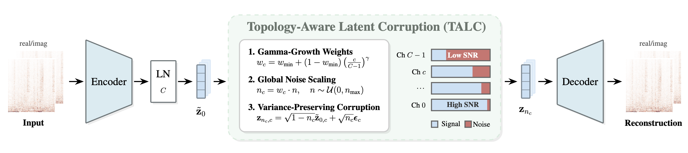
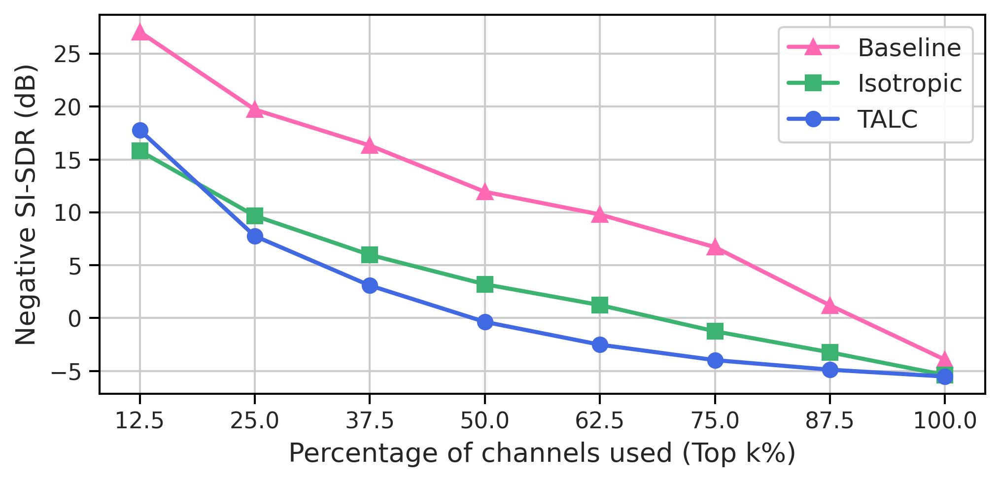

Topology-Aware Latent Corruption:
Can Noise Order Audio Autoencoder Latents?
Abstract
Continuous audio autoencoders are increasingly used as shared latent spaces for reconstruction, generation, and music information retrieval (MIR). However, most continuous bottlenecks remain topologically unstructured: every latent channel is treated identically, so no channel acquires a defined role. This paper proposes Topology-Aware Latent Corruption (TALC), which imposes an ordering by corrupting latents during autoencoder training, scaling the noise level per channel so that low-index channels carry important content at high reliability while high-index channels carry less important detail. In our experiments, isotropic latent corruption improves reconstruction substantially over an uncorrupted baseline, and TALC slightly outperforms the best isotropic model on SI-SDR while reducing latent correlation. When masking latents, its error curve stays flatter, so TALC retains most of its reconstruction quality from a subset of channels. Model weights are available under github.com/malex1106/talc.
Architecture

Audio Examples
Each row is one excerpt; each column is one system. For a fair comparison, we converted the original samples and the SAO reconstructions to mono. Headphones recommended.
| Original | CNN-AE (baseline) | TALC | Isotropic | SAO | |
|---|---|---|---|---|---|
| Example 1 | |||||
| Example 2 | |||||
| Example 3 | |||||
| Example 4 | |||||
| Example 5 | |||||
| Example 6 | |||||
| Example 7 | |||||
| Example 8 | |||||
| Example 9 | |||||
| Example 10 |
Latent Truncation
To show that an latent ordering exists, we are truncating the latent representation of each model, basically removing information of the audio input. The latent is split into groups of channels, ordered from the highest-noise group to the lowest. Truncation zeroes the highest-noise groups before decoding, so x% masked means that fraction of the latent was discarded and the decoder had to reconstruct the signal without it. A model whose information is spread evenly across channels loses everything at once; one that concentrates the signal in its low-noise channels degrades gradually. Our results show that TALC's error curve stays flatter, so TALC retains most of its reconstruction quality from a subset of channels. Here, we additionally provide audio examples of the truncated outputs to verify qualitatively.

Each block below is one excerpt. Read across a row to hear a single model degrade; read down a column to compare models at the same truncation level. Column headers give the channels the decoder still receives and the resulting dimensional compression against the input waveform: the full latent carries 64 values per 4096 audio samples (64×), and masking half of the channels doubles that to 128×.
What to listen for
CNN-AE (baseline). Truncation is catastrophic. Trained without latent corruption, the baseline distributes information across all channels with no ordering, so removing any of them destroys the representation rather than coarsening it. The decoder no longer produces anything recognisable as music — the output is noise, not a degraded version of the input.
Isotropic. Training with uniform latent noise keeps the signal intelligible under truncation: the music survives, and the content of the excerpt is still clearly identifiable. It is, however, audibly damaged, with artifacts that grow as more channels are removed.
TALC. The topology-aware noise schedule concentrates information in the low-noise channels, which are exactly the ones truncation keeps. At the same truncation level TALC is consistently cleaner than the isotropic model — fewer artifacts, and a result that sounds more like real audio rather than a reconstruction fighting to stay coherent.
Example 2
| no masking64 of 64 ch · 64× | 25% masked48 of 64 ch · 85× | 50% masked32 of 64 ch · 128× | |
|---|---|---|---|
| CNN-AE (baseline) | |||
| Isotropic | |||
| TALC | |||
| Stable Audio Open |
Example 9
| no masking64 of 64 ch · 64× | 25% masked48 of 64 ch · 85× | 50% masked32 of 64 ch · 128× | |
|---|---|---|---|
| CNN-AE (baseline) | |||
| Isotropic | |||
| TALC | |||
| Stable Audio Open |